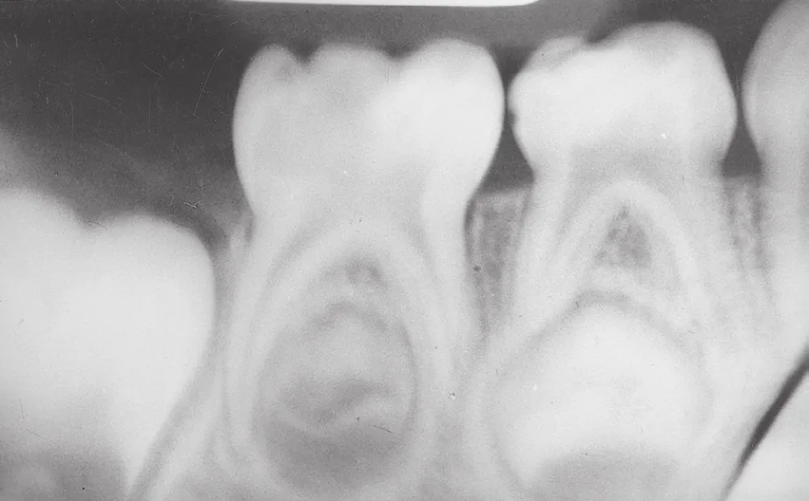
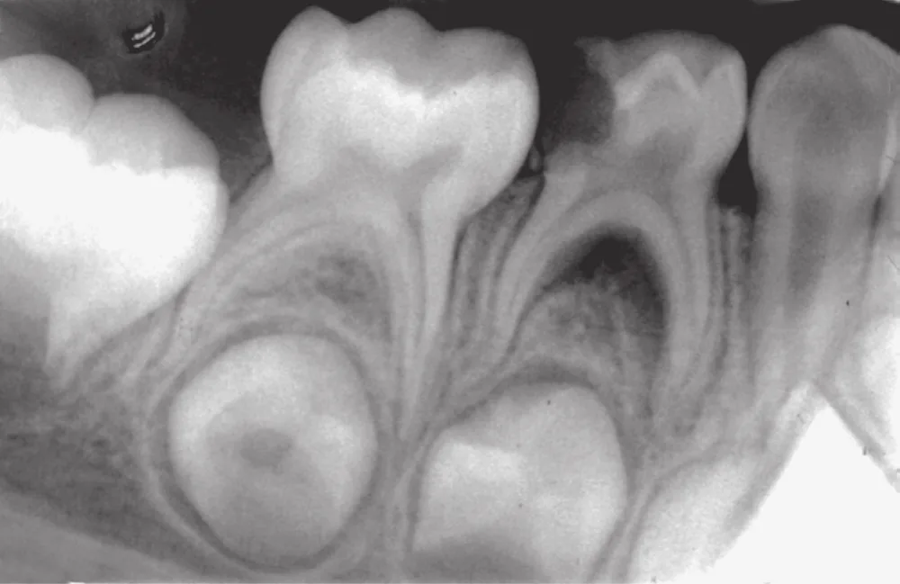

نسخه استخراجشده؛ ترجمه یا تأیید علمی انجام نشده است. وضعیت: captured
آنچه باید ببینی: تورم داخل و خارج دهانی، سینوس تراکت روی لثه، حساسیت به دق، تغییر رنگ تاج (خاکستری با نکروز میخواند)، وضعیت لثهی اطراف.
و اما اشتباه رایج:لقی دندان دو معنای کاملاً متفاوت دارد.
لقی فیزیولوژیک — از تحلیل طبیعی ریشه میآید، دندان نزدیک افتادن است، و هیچ نشانهی التهابی همراهش نیست.
لقی پاتولوژیک — از تخریب استخوان اطراف به دلیل عفونت میآید، و معمولاً با تورم، سینوس تراکت یا حساسیت به دق همراه است.
تفکیک این دو فقط با نگاه به خود دندان ممکن نیست؛ به سن، رادیوگرافی و نشانههای همراه نیاز داری.

۱. ناحیهی فورکا — نخستین جایی که باید نگاه کنی، چون شایعترین محل ظهور ضایعهی پالپی در دندان شیری است.
۲. تحلیل داخلی — گشاد شدن بادکنکی کانال از داخل. این یافته معمولاً منع پالپوتومی است، چون نشان میدهد التهاب از پالپ تاجی فراتر رفته؛ و اگر پیشرفته باشد، پالپکتومی را هم منتفی میکند.
۳. تحلیل خارجی پاتولوژیک — که باید از تحلیل فیزیولوژیک تفکیک شود: فیزیولوژیک منظم و متناسب با سن است، پاتولوژیک نامنظم و همراه با ضایعهی استخوانی.
۴. رابطه با جوانهی دندان دائمی — چون هم درمان و هم عفونت میتوانند به آن آسیب بزنند.

نوع سؤال: ساخت کلمه · 5 خانه
حروف منبع: د · ی · ا · ل · خ
نوع سؤال: ساخت کلمه · 5 خانه
حروف منبع: ک · ر · ا · ف · و